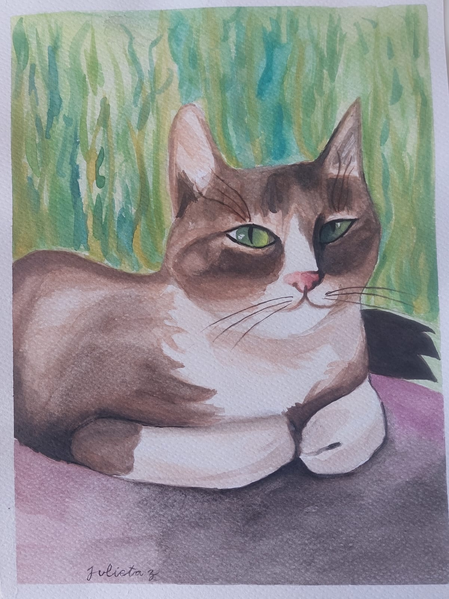
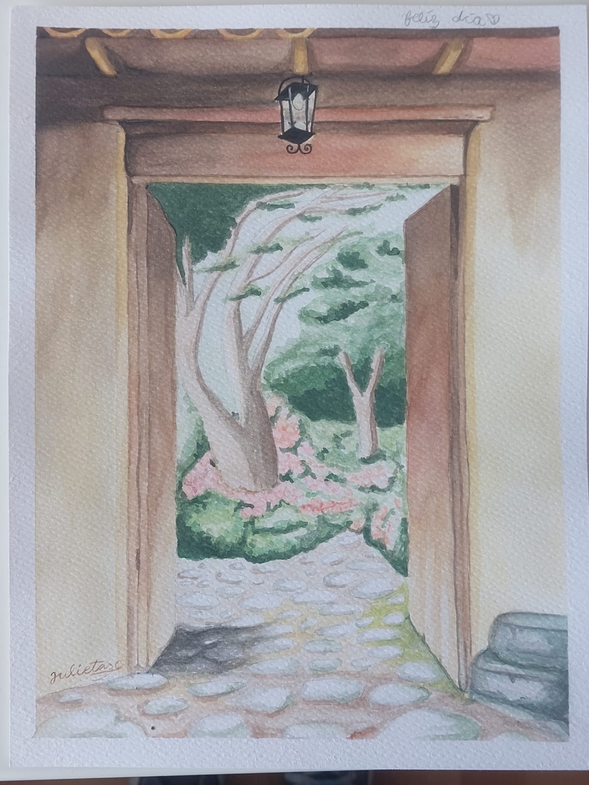
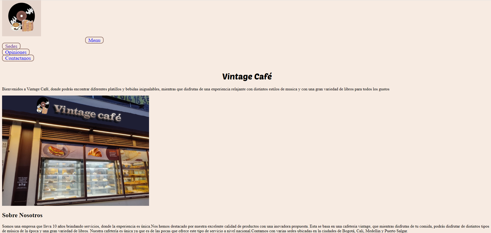

Art projects
My cat painting was made by using various watercolor techniques, I painted this cat because it reminded me of one that my aunt used to have. With this project I discovered that I love to paint animals.
My door painting was made aswell using watercolor for the whole piece. In this project I used different types of perspectives and techniques to achieve a realistic garden.
Web development project
This web page started as a school project with two of my best friends. We basically created an imaginary bakery that had everything that would make it perfect for us (music, books, etc). We created a web page for it and although its not completly finished is a nice project to work on with my friends.